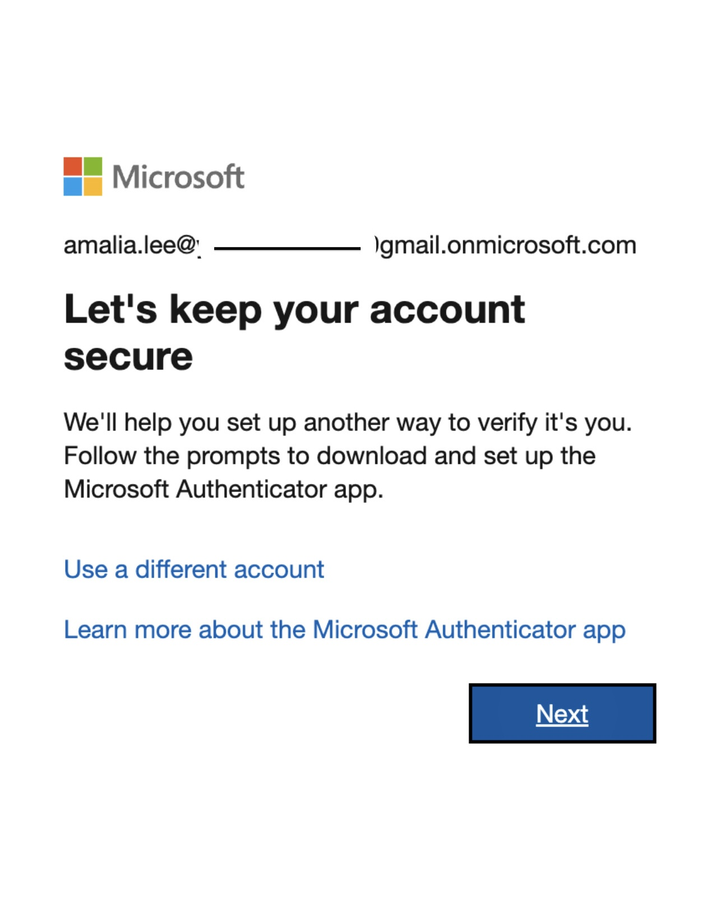
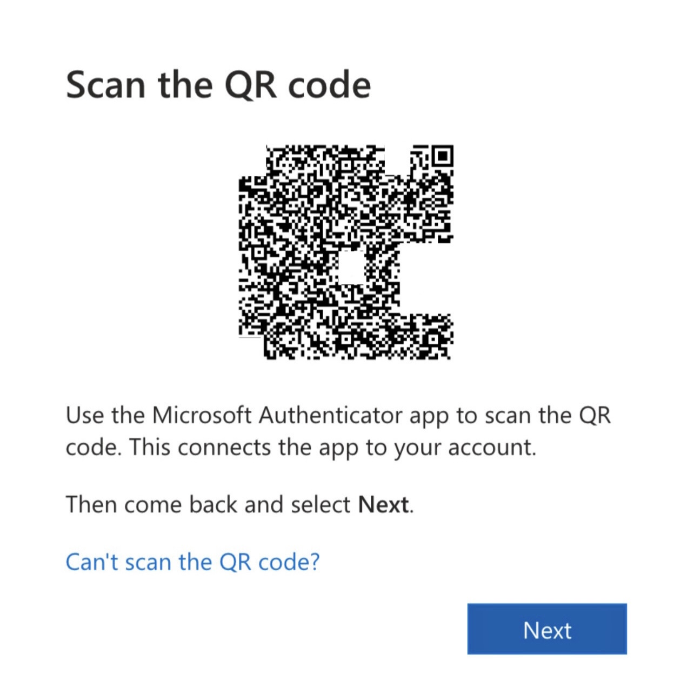
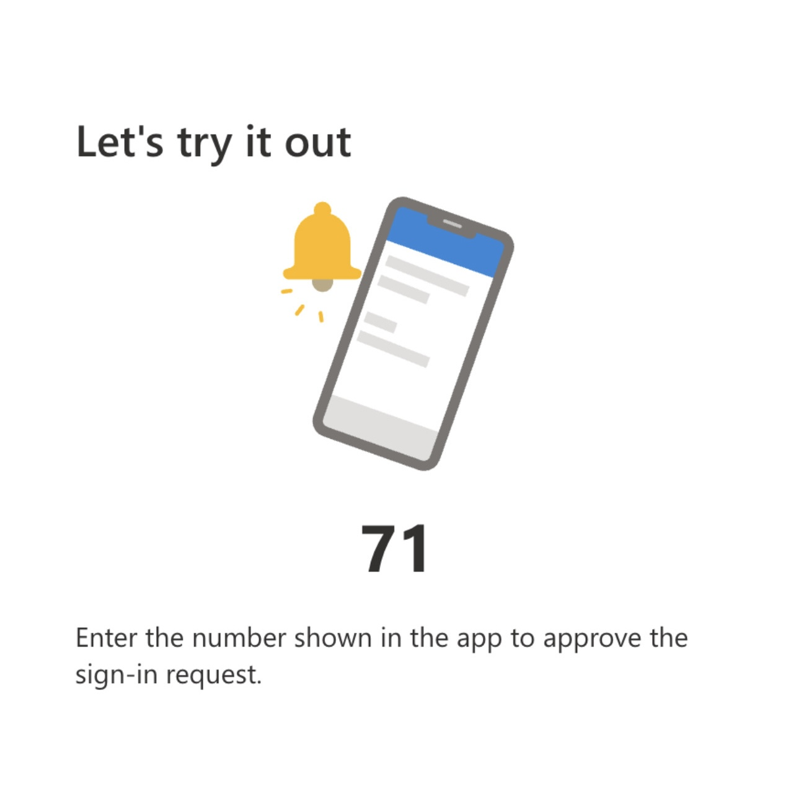
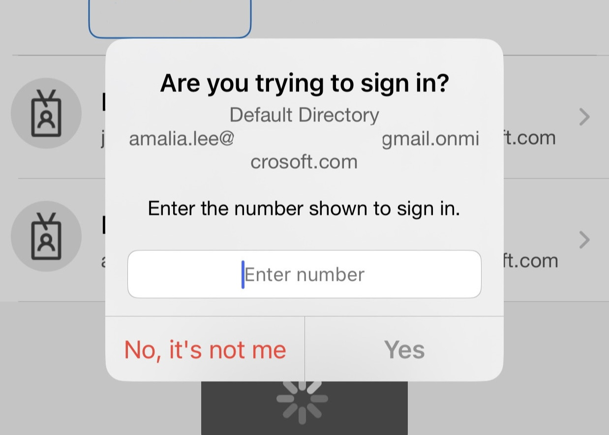
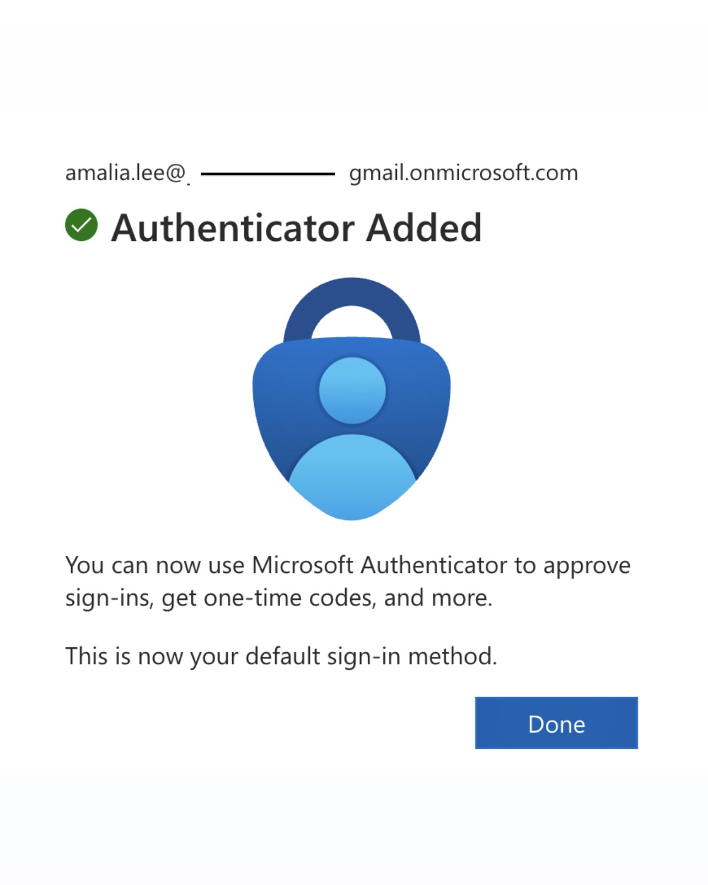

Passwords alone are not enough. A single compromised password can allow attackers to access an entire account. Multi-Factor Authentication (MFA) adds an additional layer of security that helps protect user identities even when passwords are stolen.
User credentials are frequently stolen through:
If an attacker steals only a password, they may gain access immediately. However, when MFA is enabled, a second authentication factor is required, preventing unauthorized access.
Multi-Factor Authentication verifies a user's identity using two or more factors:
Password or PIN
Mobile phone or authenticator app
Biometrics such as fingerprint or facial recognition
As part of my Identity and Access Management lab environment, I configured Multi-Factor Authentication when provisioning new users in Microsoft Entra ID.
Below is an example scenario for a new employee account.

User prompted to configure MFA during first login
User asked to download the Microsoft Authenticator app

QR code scanned using Microsoft Authenticator

Verification number generated

User approves login via Authenticator app

MFA verification completed
Once MFA is enabled, the login process includes two verification steps:
In many cases, the authenticator app itself requires biometric verification such as fingerprint or facial recognition before approving the request.
This means an attacker would need access to the user's password, physical device, and device unlock method.
Passwords alone are no longer sufficient to protect user identities. Multi-Factor Authentication is one of the most effective security controls organizations can implement to reduce account compromise.
Implementing MFA significantly improves identity security and protects against many of the most common attack methods used today.